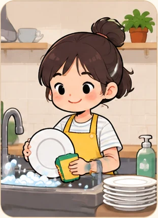
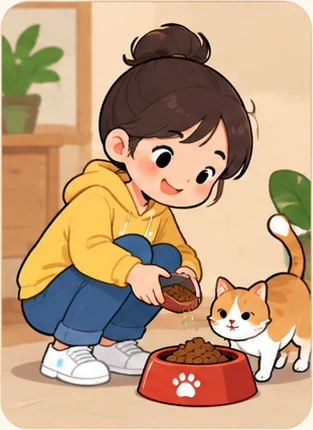
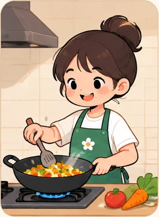
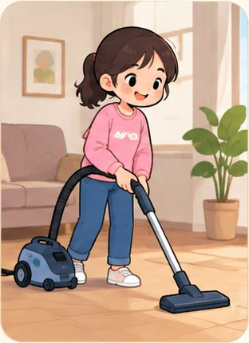
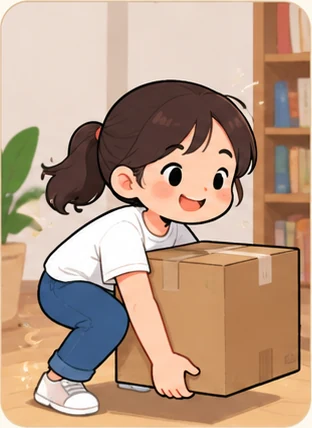
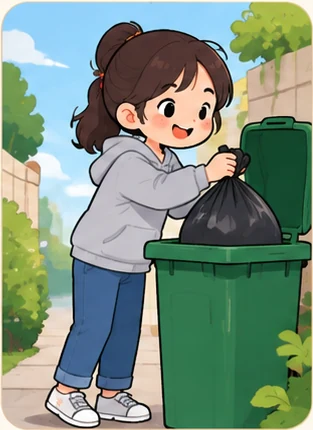
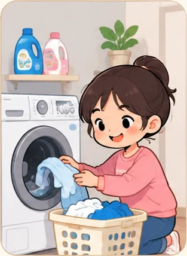
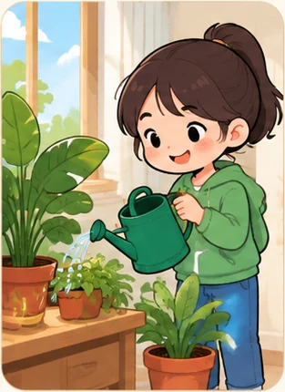
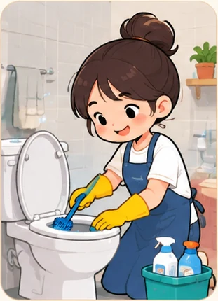

Should children
do housework?
Lesson 4 — Speaking
1Three stops in 45 minutes
- ⚡
Match the chores
Ten pictures, ten action phrases
5 min - ⚖️
Should · Shouldn’t
Sort the reasons, then complete a dialogue
25 min - 🎭
Role-play
Groups of three — argue your side
13 min
By the end of this lesson, you will be able to…
- 🗣️
Speak
Explain why children should — or shouldn’t — do housework.
- 🤝
Agree & disagree
Say you agree, or disagree politely, and give a reason.
- ⚖️
Think critically
Balance study, play and family duty — instead of picking one side blindly.
- 🤖
Digital & AI
10.C3.2 write prompts so AI can play your partner · 10.A2.1 examine how chores split by gender and age
Match the chores
Fast round — teams
5 minutesWhich action phrase goes with each picture?
- cook
- do the laundry
- do the washing-up
- do the heavy lifting
- shop for groceries
- feed the pets
- water the plants
- clean the bathroom
- clean the house
- put out the rubbish
Ten phrases, ten pictures. Write 1–10 down the side of your sheet and put one phrase beside each number. First team with all ten wins. Give teams two minutes on the next two slides before you flip any card. Flip a card only to settle an argument.
Pictures 1–5





Pictures 6–10




Should · Shouldn’t
Sort the reasons, then complete the dialogue
25 minutesWhich column does each reason belong in?
- It develops life skills.
- It teaches responsibility.
- Children need time to play.
- Children may break things.
- It strengthens family bonds.
- Children need time to study.
Sort them: SHOULD or SHOULDN’T? SHOULD — 1, 2, 5 · SHOULDN’T — 3, 4, 6
How to take a side politely
Giving an opinion
I strongly believe (that)…
In my opinion,…
It seems to me that…
Agreeing · disagreeing
I agree, but…
That’s a good point, however…
Exactly! · I’m afraid I don’t think so.
Notice
I agree, but… is the politest way to disagree — agree first, push back second. Use it far more than No, you’re wrong.
Complete the model conversation · page 12
1. Why does Anna think children should do housework? Doing housework helps them develop life skills.
2. What does Nam say children also need? They should be given plenty of playtime.
Role-play
Groups of three · swap roles
13 minutesAnna · Nam · Minh · 1–2
Anna · Nam · Minh · 3
Your turn
Swap roles three times — everyone speaks all three parts.
Use your own reasons. Do not just read the model above.
Record yourselves, then listen back
- 🎙️
10.C3.2
Record on your phone. Listen back and count: how many complete sentences did you say?
- 🧐
10.A2.1
In your group, who got which job? Did the girls always take the kitchen and the boys the heavy lifting? Why?
Three things to check when you listen back: 1. Did I give a reason, not just an opinion? 2. Did I use I agree, but… instead of interrupting? 3. Were yesterday’s /br/ /kr/ /tr/ clear?
Before you go
Today’s board
Words: take responsibility · life skills · damage · necessary
Opinion: I strongly believe… · In my opinion…
Polite disagreement: I agree, but… · That’s a good point, however…
Give your opinion in one sentence — with a reason. In my opinion, children should do simple chores because it teaches them responsibility.
Homework
Homework
1. Write an 80–100 word paragraph giving your opinion on children doing housework.
2. Prepare for Lesson 5 — Listening.